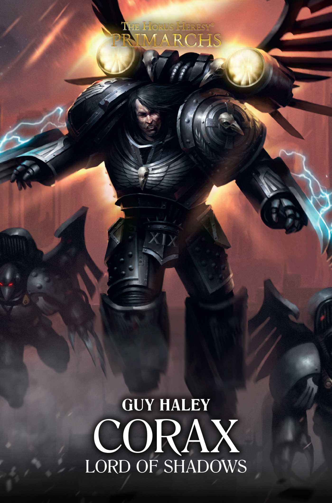

CORAX: LORD OF SHADOWS

Author: Guy Haley
Format: Novel
Corax and the Raven Guard are sent against the fortified void-cities of Carinae. When an ancient bio-weapon devastates the Imperial force, Corax must weigh swift victory against his desire for vengeance.
Introduction reviewed against Black Library’s description on 2026-09-27. The publisher page may contain spoilers.
Publication facts: publisher source, checked 2026-09-26.
Open this work in the interactive Archive to track reading progress and explore related works.